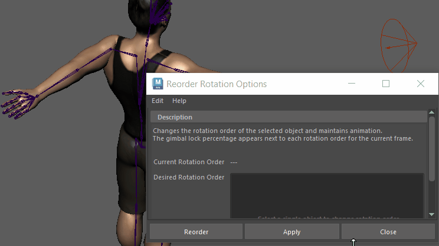

- 若要打开“对旋转重新排序选项”(Reorder Rotation Options)，请从主菜单中选择。

使用“对旋转重新排序”(Reorder Rotation)，无需更改动画即可校正万向锁定的手臂
这些设置可用于更改对象的旋转顺序，而不影响动画。更改旋转顺序有助于避免万向锁定，当三个旋转轴（X、Y 或 Z）中的两个轴变得平行且无法独立操作时，就会发生万向锁定。
“对旋转重新排序...”(Reorder Rotation...)将对选定动画进行解算，并通过显示百分比来报告哪个轴方向最能避免万向旋转，其中 0% 表示没有万向锁定，100% 表示旋转顺序有问题。
- 当前旋转顺序(Current Rotation Order)
- 显示选定动画的旋转轴。
- 所需旋转顺序(Desired Rotation Order)
- 显示选定动画的可能旋转轴的列表。每个轴旁边都会显示一个百分比，以显示哪个旋转顺序最不可能对齐并受万向锁定的影响。（0% = 锁定的可能性极小，100% = 锁定的可能性极大。）
-
更改选定对象的旋转轴
- 从主菜单中选择以打开“对旋转重新排序选项”(Reorder Rotation Options)。
- 在视口或大纲视图中选择已设置动画的对象，以使用建议的旋转顺序和万向锁定百分比填充“所需旋转顺序”(Desired rotation order)列表。如果选择多个对象，则不显示旋转顺序。
- 在“所需旋转顺序”(Desired rotation order)列表中单击旋转顺序，然后单击“应用”(Apply)。显示的百分比越低，万向锁定的可能性越低。
-
注： 该列表显示动画的所有可能旋转轴。